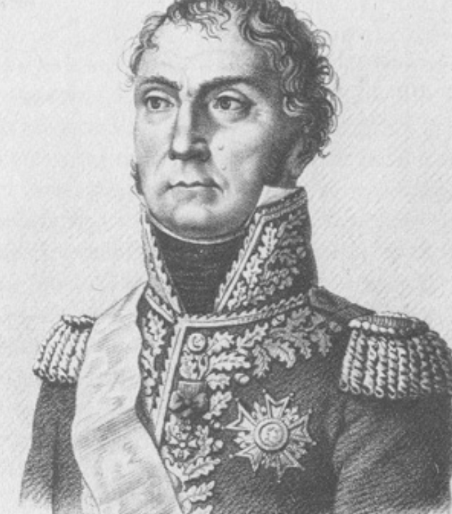
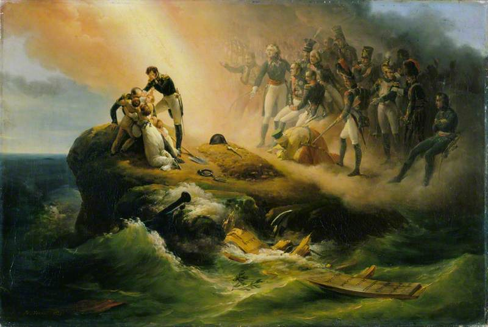

라이프치히 전투 (20) - 첫날 전투의 의미
게시: 2025-10-06T09:06:17+09:00
1813년 10월 16일, 유럽 역사를 결정 지을 운명의 라이프치히 전투의 첫날이 그렇게 마무리 되었습니다. 북쪽 전선에서는 압도적인 수적 열세에도 불구하고 매우 잘 싸우던 마르몽이 마지막 순간의 판단 착오로 인해 무너지고 말았습니다만, 실은 2~3km 후퇴한 것에 불과했습니다. 양측의 전력이 엇비슷했던 남쪽 전선에서는 나폴레옹이 슈바르첸베르크를 거의 무너뜨릴 뻔 하기도 했습니다만, 결국 뒷심 부족으로 양측은 아침에 전투가 시작될 때의 그 전선을 그대로 유지했습니다. 귤라이의 오스트리아군이 린더나우를 공격했던 서쪽 전선에서는 베르트랑과 아리기가 별 어려움 없이 린더나우를 잘 지켜냈습니다. 이렇게만 보면 라이프치히 첫날의 전투는 양측이 팽팽한 전투를 벌였으나 승패를 결정짓지는 못한 채 종료된 것입니다. 하지만 무승부를 기록했다는 것부터가 실은 약간 오해입니다. 이 첫날 전투에서 이미 라이프치히 전투의 승패는 결정되었고, 그건 나폴레옹의 패배였습니다. 이 날 나폴레옹은 남쪽 전선에서 반드시 승리를 거두어야 했는데 그러지 못했고, 그것으로 전체 전투에서 나폴레옹은 패배한 것입니다. 애초에 라이프치히 전투가 벌어진 이유가 전에 설명드린 대로, 나폴레옹의 거대한 내선이동(interior lines movement) 전략에 따른 것이었습니다. 10월 3일 바르텐베르크 전투를 통해 블뤼허가 엘베강을 건넜을 때, 나폴레옹은 빠른 기동력을 이용해 반드시 블뤼허를 따라 잡고 재빨리 패배시켜야 했습니다. 이렇게 엘베강과 얼츠거비어거 산맥을 낀 거대한 규모의 내선이동을 효과적으로 해내지 못한 것에서 1차로 패배한 것이나 다름없었습니다. 하지만 나폴레옹은 포기하지 않고, 이번에는 훨씬 작은 규모인 라이프치히 주변의 강들을 이용한 내선이동의 결과가 라이프치히 전투였습니다. 전체 병력수에서 열세였던 나폴레옹은 어떻게든 연합군을 각개격파해야 했고, 그러기 위해서 10월 16일 라이프치히 남쪽 전선에 순간적이나마 병력의 수적 우세를 가질 수 있었습니다. 나폴레옹은 그 짧은 순간에 승리를 거머쥐어야 했습니다. 그런데 그러지 못한 것입니다. 손자병법에 절대 강을 등에 지지 말라고 되어 있지만 실제로는 강을 등에 지고 싸워 이긴 경우가 많습니다. 군사작전의 오묘함은 어떤 공식이나 철칙에 있는 것이 아니라, 구체적인 응용과 실행 단계에 있는 것입니다. 창업에 있어서도 뭔가 괜찮은 아이템 없느냐는 소리를 많이 듣습니다만, 실은 사업의 성패 여부는 기발한 아이디어에 달린 것이 아니라 그 실행에 달린 것입니다. 기발한 아이디어는 그것이 구체적이고 심오한 기술적 특허로 보호되는 것이 아닌 이상 금새 남들이 따라하기 때문입니다. 나폴레옹의 무적 신화도 마찬가지입니다. 빠른 기동력과 지리적 이점을 100% 살린 병력의 순간적 집중에 의존했던 나폴레옹의 내선이동 전술은, 그의 전성기이던 1797년 리볼리 전투나 1805년 아우스테를리츠 전투에서는 통했을지 몰라도, 1813년 라이프치히에서는 통하지 않았습니다. 그의 군대가 과거와는 달리 잘 단련된 정예병도 아니었고, 혁명 정신으로 동기 부여가 확고히 부여된 것도 아니었으며, 즐비하던 인재들은 이미 죽었거나 늙었거나 그와 사이가 벌어졌습니다. 무엇보다, 나폴레옹 자신이 지킬 것이 많고 늙은 기득권이 되어 있는 것에 반하여, 적은 프랑스의 압제에서 벗어나겠다는 각오로 사기가 충천한 상태였습니다.

(제3군단장 수암 장군입니다. 나폴레옹보다 9세 연상이었던 그는 전형적인 프랑스 혁명의 산물으로서, 일반 사병으로 오랜 시간 복무하다 혁명군에 참여하여 능력 하나로 순식간에 장군이 되었습니다. 그러나 나폴레옹의 정적 모로 장군 밑에서 주로 복무했던 관계로 나폴레옹이 정권을 잡은 이후 무보직 생활을 해야 했고 모로가 체포될 때 그도 함께 체포되기도 했습니다. 그는 나폴레옹의 주목을 받는 인재는 아니라서, 바그람 전투 이후 인재 부족에 직면하고 나서야 기용되었습니다. 라이프치히 전투 내내 그는 별다른 두각을 드러내지 못했는데, 이는 그의 무능탓이라기 보다는 나폴레옹과 네가 제3군단을 돌려막기용 사단 단위로 운용했기 때문이었습니다.)
이렇게 말하면 추상적인 것처럼 보이지만, 그 구체적인 결과가 수암의 제3군단이 라이프치히에 뒤늦게 도착한 데다, 마르몽, 네는 물론 궁극적으로는 나폴레옹 본인이 상황을 제대로 파악하지 못하고 잘못된 결정을 내린 것입니다. 병사들의 행군 속도는 반짝이는 아이디어에 의해 빠르게 할 수 없는 것입니다. 그거야말로 사업에 있어서 아이템이나 아이디어보다는 얼마나 악착 같이 실행에 옮기느냐에 해당하는 것으로서, 직원들이나 병사들의 동기 부여, 그리고 우수한 현장 관리자와 일선 지휘관의 역량에 달린 것입니다. 훗날 세인트 헬레나 섬에서 회고록을 구술할 때, 나폴레옹은 라이프치히 전투의 패배를 제3군단의 지각 탓으로 돌렸습니다. 제3군단이 늦게 도착하는 바람에 마르몽과 베르트랑의 군단이 북쪽에 묶여 있느라 남쪽 전선에 올 수 없었고, 그래서 첫날 남쪽 전선에서 승리하지 못했다는 것입니다. 그러나 여태까지의 전황을 읽으신 분들이라면 과연 제3군단의 지각이 실패의 궁극적 이유인가에 대해 고개를 갸우뚱하실 것입니다. 지각은 직장 생활 뿐만 아니라 군대의 작전에 있어서도 있을 수 있는 일입니다. 거기에 전적으로 승패가 좌우된다면 뭔가가 잘못된 것입니다. 실은, 제3군단의 지각보다 더 큰 영향을 준 것은 마르몽이 남쪽으로 달려가지 않고 북쪽에 남아 블뤼허와 혈투를 벌이기로 결정한 것도 있고, 그보다 더 큰 이유는 베르트랑의 제4군단을 남쪽이 아니라 서쪽, 즉 귤라이가 공격한 린더나우로 보낸 것에 있었습니다. 전에 설명드렸듯이 애초에 린더나우는 지형상 방어에 매우 유리한 곳이라서 아리기의 수천 병력으로도 지키는 것이 가능한 곳이었습니다. 거길 공격한 귤라이도 그저 나폴레옹의 병력을 분산시키는 것이 목적이었을 뿐 거길 돌파하여 라이프치히 시내로 돌입할 생각이 없었습니다. 돌입하는 데 성공한다고 해서 그 뒤를 지원해줄 연합군 병력도 없었고요. 과도하게 겁에 질린 아리기가 지원을 요청했을 때, 왜 용자 중의 용자 네는 거기에 베르트랑의 제4군단을 통째로 투입했을까요? 설령 린더나우가 유사시 퇴각로로 매우 중요한 장소라서 반드시 지켜야 했다고 해도, 그냥 베르트랑 휘하의 1개 사단 정도만 보내면 되는 거 아니었을까요? 만약 그랬다면, 베르트랑의 3개 사단 중 남은 2개 사단으로 블뤼허의 전진을 틀어막고, 마르몽의 제6군단은 라이프치히 남쪽 전선으로 가서 나폴레옹의 승리를 굳힐 수 있지 않았을까요?

(이 그림의 프랑스어 제목은 L'Apothéose de Napoléon, 즉 나폴레옹의 신격화라는 것인데, 영어 제목은 보통 Napoleon's Tomb 즉 나폴레옹의 무덤으로 알려져 있습니다. 이 그림은 1821년 나폴레옹이 세인트 헬레나에서 사망하자 그를 기리기 위해 그려진 Horace Vernet의 작품입니다. 그림 가운데에 나폴레옹의 초라한 무덤이 있고 그 왼쪽에 서로 끌어안고 슬퍼하는 사람들이 보이는데, 거기 보이는 대머리 장군이 바로 베르트랑입니다. 그와 함께 슬퍼하는 여성과 아이들은 바로 베르트랑의 가족으로서, 이들은 나폴레옹을 보좌하기 위해 세인트 헬레나까지 따라갔습니다. 그 오른쪽에 있는 두발이 풍성한 군인은 함께 따라갔던 트리스탕(Charles Tristan) 장군입니다. 그 오른쪽에 보이는 반쯤 투명한 군복 집단은 이미 죽은 사라들, 즉 베르티에와 란, 베시에르 등등입니다. 거기에서 절을 하고 터번 복장의 사람은 글쎄요... 나폴레옹의 마믈룩 시종이었던 루스탕일까요? 여기서도 유럽의 인종적, 문화적 편견이 그대로 드러나네요. 참고로 루스탕은 나폴레옹이 이집트에서 데려오긴 했지만, 원래 기독교인 노예를 훈련시켜 용병으로 썼던 마믈룩 전통에 따라, 루스탕의 인종적 배경은 아르메니아로서, 굳이 따지자면 그야말로 코카시안, 즉 백인 계통입니다.)
이렇게 보면 베르트랑의 군단을 통째로 린더나우에 보낸 네의 판단 착오가 라이프치히 패전의 결정적 원인으로 보입니다. 그런데 희한하게도 마르몽도 나폴레옹도 네의 그 판단에 대해서는 별다른 언급을 하지 않았습니다. 왜일까요? 그건 바로 네의 실수가 아니라 나폴레옹의 실수였기 때문입니다. 기억하시겠습니다만, 마르몽이 15일 저녁에 나폴레옹에게 보고서를 보내면서 '린덴탈 방면에 적군이 나타났다'라고 호들갑을 떨자, 나폴레옹은 '그건 일부 기병대일 뿐이고 블뤼허는 린더나우 방면에 나타났으니 너는 그냥 내일 아침 일찍 남쪽 전선으로 달려와라' 라고 면박을 준 바 있었습니다. 네도 그 교신을 잘 알고 있었으므로, 린더나우의 아리기가 지원을 요청하는 급보를 보내자 거기에 블뤼허의 대군이 나타났다고 생각할 수 밖에 없었던 것입니다. 결국 결정적인 순간에, 베르트랑의 제4군단 전체는 별로 하는 일도 없이 린더나우에서 시간을 보냈습니다. 없는 병력도 끌어모아 전력을 다해 남쪽 전선에 병력을 투입해야 할 마당에, 베르트랑의 제4군단은 린더나우에서 시간을 허비했고 수암의 제3군단은 북쪽과 남쪽 사이에서 이리저리 우왕좌앙하며 시간을 보냈으니, 나폴레옹이 남쪽 전선에서 승리하지 못한 것이 당연하다고 할 수 있습니다. 만약 나폴레옹의 군단들이 귈덴고사 언덕에서 기진맥진해 있을 때, 마르몽의 정예 제6군단이 예정대로 현장에 나타났다면 전황은 크게 달라졌을 것입니다. 아무튼 라이프치히 첫날 전투가 형식적으로는 무승부로 끝났으니, 이제 다음 날은 어떻게 전개되는 것이 통상적이었을까요? 나폴레옹 전사를 보면 이런 경우가 꽤 있었는데, 대개 그날 밤 사이에 어느 한 쪽이 물러나거나, 혹은 다음날 다시 싸워 승부를 결정지었습니다. 가령 나폴레옹의 실질적인 첫 패배인 아일라우 전투도 첫날 양측이 엄청난 피해를 주고 받으며 싸운 뒤, 밤 사이에 러시아군이 슬그머니 물러나면서 나폴레옹의 승리가 결정되었습니다. 보로디노 전투도 똑같은 형태였습니다. 바그람 전투 같은 경우가 이튿날 다시 전투를 벌여 나폴레옹의 승리가 확정된 경우지요. 그러니까, 라이프치히에서도 밤 사이에 어느 한쪽이 후퇴하든가, 다음날 다시 싸우면 되는 것이었습니다. 그런데, 놀랍게도 10월 17일, 양측은 그냥 그 자리에 그대로 있었고, 싸우지도 않았습니다. 북쪽에서는 약간의 전투가 벌어지기도 했습니다만, 남쪽 주전장에서 전투가 벌어지지 않는다는 것을 깨닫자, 블뤼허가 전투를 중단시키면서 흐지부지 끝나고 말았습니다. 만약 나폴레옹이 첫날 무승부가 자신의 사실상 패배라고 판단했다면, 물러나서 더 유리한 장소에서 싸우는 것이 정상일 텐데, 그러지도 않고 그대로 있었습니다. 대체 어쩌다 이런 독특한 상황이 벌어지게 된 것일까요? Source : The Life of Napoleon Bonaparte, by William Milligan Sloane Napoleon and the Struggle for Germany, by Leggiere, Michael V With Napoleon's Guns by Colonel Jean-Nicolas-Auguste Noël https://www.britannica.com/event/Napoleonic-Wars/Dispositions-for-the-autumn-campaign https://www.historyofwar.org/articles/battles_leipzig_16_october.html https://warhistory.org/@msw/article/leipzig-battle-of-the-nations https://www.napolun.com/mirror/napoleonistyka.atspace.com/Leipzig_battle.htm https://en.wikipedia.org/wiki/Napoleon%27s_Tomb_(painting)